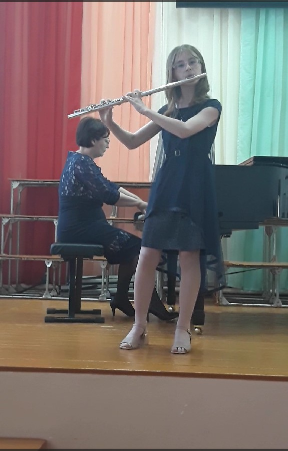
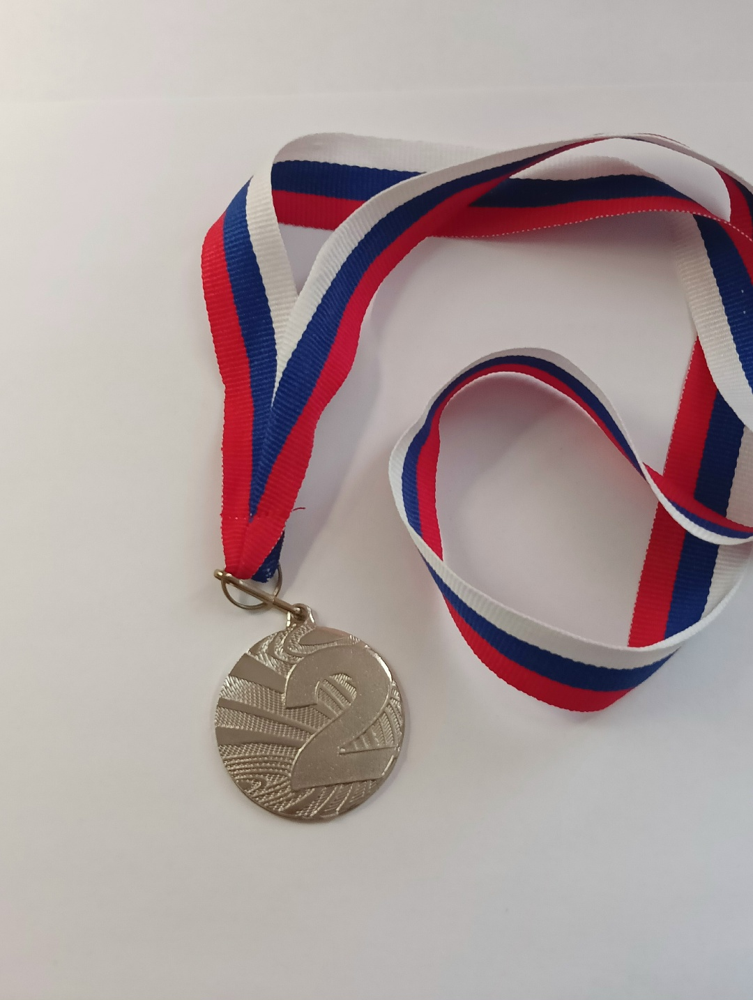
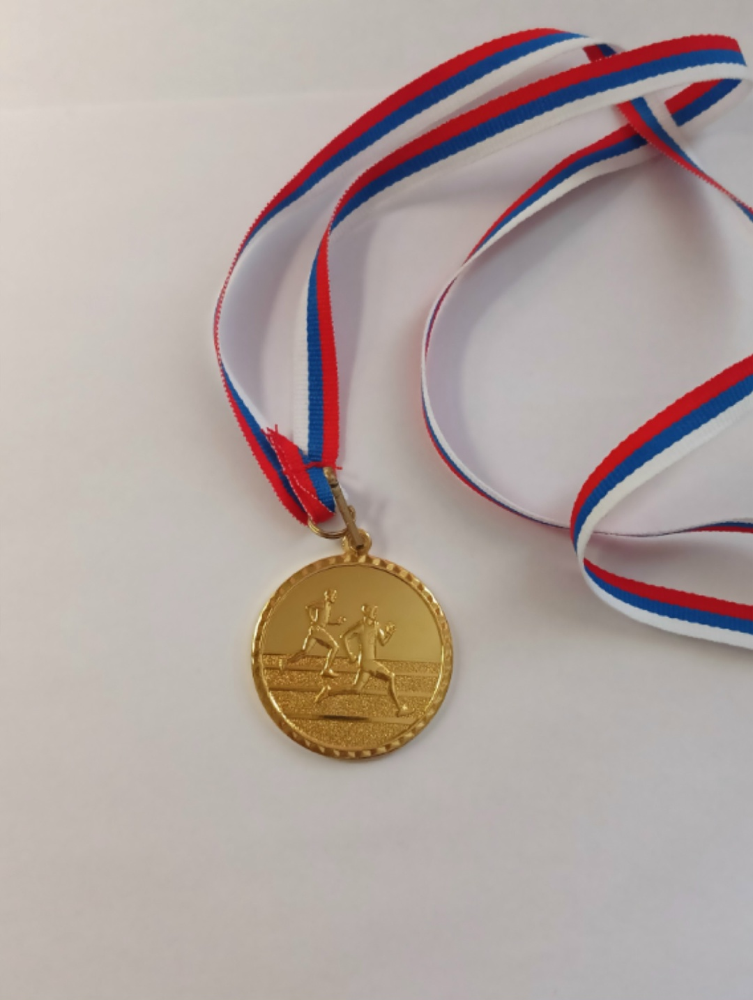
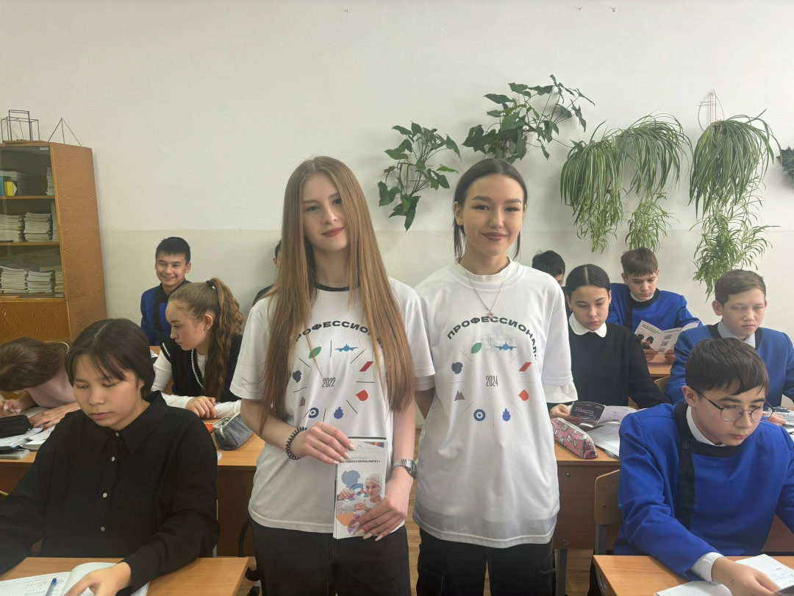
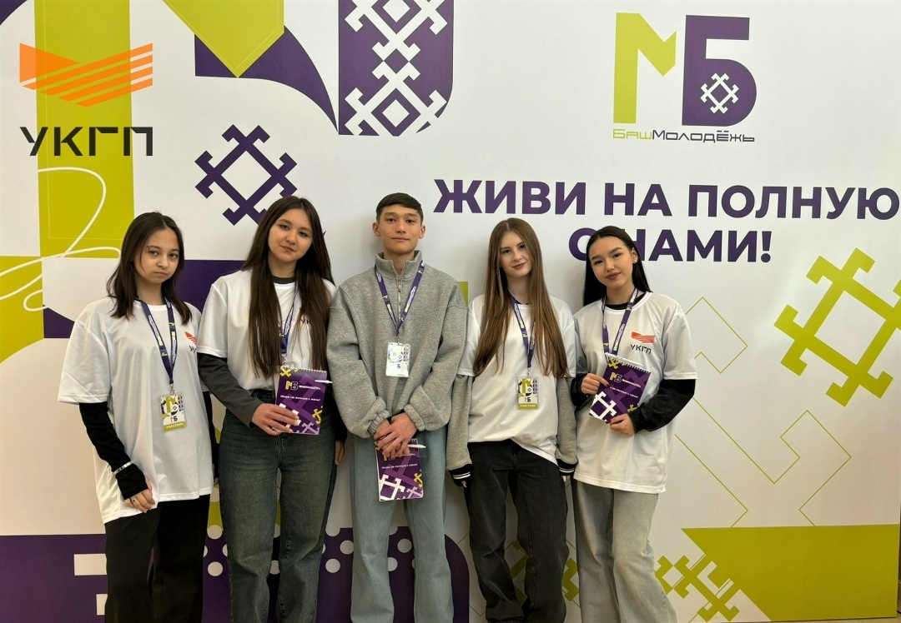

Обо мне
Познакомимся поближе ✨
ФИО: Дойч Владислава Владимировна
Возраст: 17 лет
Город: Учалы
Люблю: Путешествовать и открывать новые места
Моя цель — стать Frontend-разработчиком и создавать сайты, которые будут не только функциональными, но и по-настоящему красивыми. Вдохновлять, удивлять и делать интернет удобнее.
🌍 Моя любовь к путешествиям — это не просто хобби, а состояние души. Каждая поездка делает меня богаче: не вещами, а воспоминаниями, которые остаются со мной навсегда.
Мои моменты
Музыкальная стихия
- • Свидетельство о музыкальном образовании по классу флейты (8 лет)
- • Свидетельство о дополнительном обучении по классу фортепиано (5 лет)
- • Свидетельство о дополнительном обучении по классу гитары (2,5 года)



Спортивные навыки
- • Волейбол (5 лет)
- • Танцы (2 года)
- • Тайский бокс (1,5 года)
Волонтёрство
Я волонтёр в колледже. Всегда там, где нужна помощь. В движении с первого курса.

